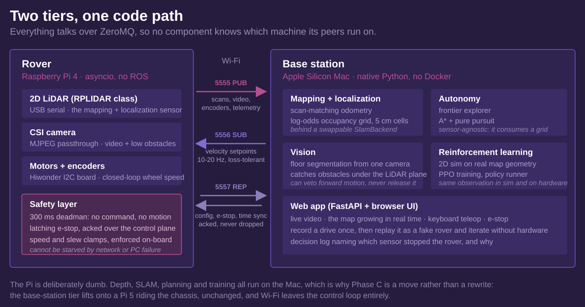
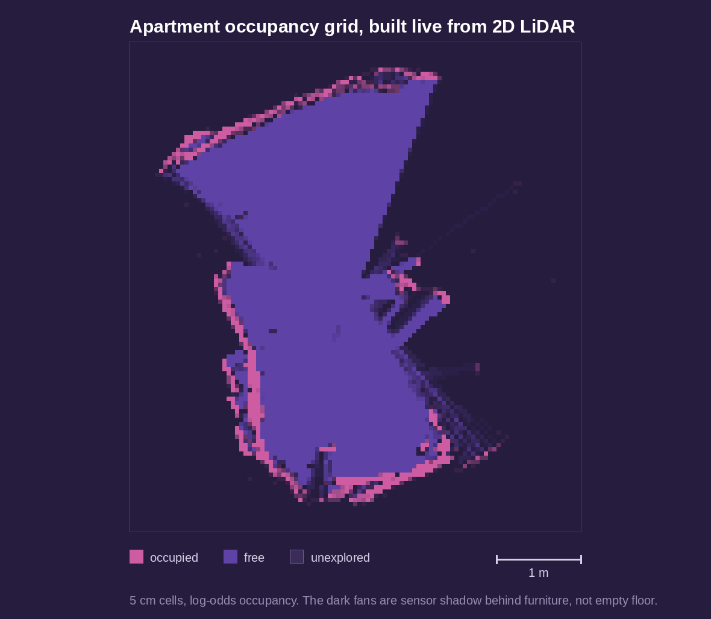
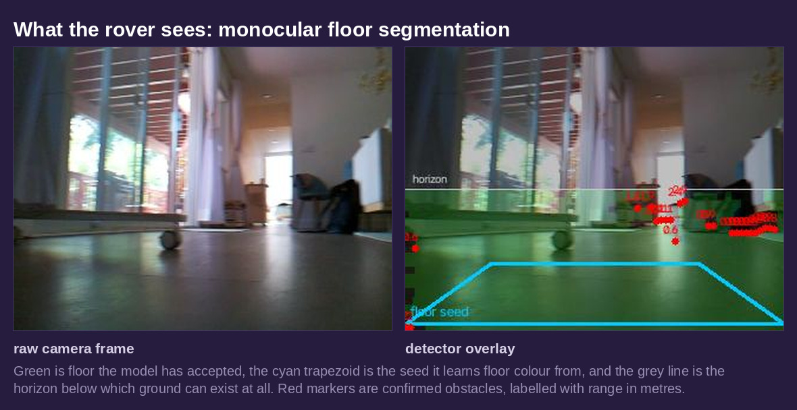

Autonomous SLAM Rover
A tank-tread rover that maps an apartment and drives itself through it. A Raspberry Pi 4 rides the chassis and does almost nothing: it reads sensors, streams them, and executes velocity commands behind a safety layer. A Mac base station does the thinking, which means mapping, localization, planning, obstacle vision, and reinforcement learning. Custom Python throughout, no ROS.
The interesting part of this project is not that it works. It is what happened when the first sensor choice turned out to be physically wrong, and what the architecture let me do about it.

The two tiers are logical, not physical. Everything moves over ZeroMQ, so nothing in the stack knows which machine its peers are on. Sensor streams go out over a lossy PUB socket because velocity setpoints are idempotent and the deadman covers a dropped one. Anything that must not be silently lost, meaning e-stop, config, and time sync, goes over REQ/REP and gets an ack.
Keeping the rover simple is a safety argument, not an aesthetic one. The only code that can move a motor is small, synchronous, and sits in the same loop that writes PWM, so no amount of network trouble or base-station failure can starve it.
Mapping
A 2D LiDAR sweeps a horizontal slice of the room. Every revolution runs through scan-matching odometry to update the pose, then integrates into a log-odds occupancy grid at 5 cm cells: free along each beam, occupied at the endpoint. The scan matcher is pure Python and numpy, which is the whole reason the base station is a plain Mac process instead of a C++ SLAM stack in a container.

The log-odds update is bounded, and that is what makes the map dynamic rather than a snapshot. Repeated observations flip stale cells, so furniture that moves heals in the live map instead of haunting it forever. Navigation always consumes the live map.
The part that did not work
The rover was originally built around a stereo camera. Two eyes, roughly 60 mm apart, mounted about 10 cm off the floor. Depth from block matching, pose from stereo visual odometry, occupancy by projecting that depth through that pose. It produced maps tiled with speckle and a phantom wall ring at a fixed distance from the robot, on carpet and on hardwood alike.
Calibration was not the problem. After correcting for an upside-down mount I solved a clean one: 0.297 px RMS reprojection error, 60.8 mm baseline. The geometry was right and the depth was still unusable, which narrowed the cause to physics.
Stereo depth error grows with the square of range and with the grazing angle to the surface. A camera 10 cm off the floor sees that floor, one to two metres out, at close to the worst angle available.
At that angle the depth scatter of floor points is tens of centimetres, which is the same order as the height of the obstacles I needed to detect. Floor and chair leg land in overlapping distributions. No classifier operating on that depth can separate them. Worse, block matching tends to underestimate grazing-floor depth, which pulls floor points toward the camera and lifts them off the true floor plane, which is exactly the signature of an obstacle. That is the phantom ring.
Visual odometry failed separately and for its own reasons. It is dead reckoning with no loop closure, so it drifts, and during a pure in-place rotation there is no parallax, so it invents translation. The rover would spin on the spot and the map would show it flying across the room.
I spent weeks on mitigations: height-band filtering, camera-height-derived obstacle bands, RANSAC ground-plane classification, a closer-than-the-floor-ray test, a near-field mapping cap, multi-frame confirmation, connected-component despeckling, an encoder-based gate to suppress invented translation during spins, and an ultrasonic sensor for the near field. Each one removed some false positives. None reached the noise floor, because none of them could recover information the measurement never contained. The tell that it was time to stop was that each new fix bought less than the last while the core symptom persisted.
The pivot
A 2D LiDAR measures range directly and never looks at the floor at all, so mount height stops being a first-order error term. Scan matching corrects drift and handles pure rotation, which is the exact failure that killed the visual odometry. This is what robot vacuums use, and not by accident.
The swap took about a week rather than a rewrite, and that was a payoff for a decision made much
earlier. SLAM sat behind a thin SlamBackend interface and the occupancy grid was
sensor-agnostic, so a LiDAR backend dropped in behind the same interface with nothing downstream
changing. The frontier explorer, the planner, the web app, the simulator, the safety layer, and the RL
contract all carried forward untouched. The stereo work produced most of the stack that survived it.
What the camera does now
The camera stopped being a mapping sensor and became an obstacle sensor for the volume the LiDAR cannot see. A 2D LiDAR is blind to anything wholly below its scan plane, so a single camera runs floor segmentation: learn the floor's appearance from a seed patch of known-good ground, then scan upward and convert the first non-floor row in each column into a ground distance.

Two measured numbers are its entire calibration: lens height above the floor and downward tilt. Get the height wrong and every reported distance is scaled by the same factor. At 9 cm and level, the nearest floor the camera can see is about 24 cm ahead, while the chassis radius is 16 cm, so there is a ring the camera cannot check. Tilting down shrinks that sharply at no cost to the far field, which is the opposite of the constraint that killed stereo mapping. Here, looking down is good.
The detector can veto forward motion. It cannot release it. That asymmetry is deliberate and it shows up again below.
Autonomy
Auto-explore starts with a 360 degree scan, then repeatedly picks the best frontier between known and unknown space, plans through known-free cells, drives there at crawl speed, scans, and stops itself when no frontiers remain. Planning is A* with a safety margin, tracked by pure pursuit with a clearance governor that slows the rover near walls.
Stopping matters more than driving. The run cancels on the stop button, any manual input, or e-stop, and it stops itself on stale sensor data or anything closer than 0.35 m. The decision log names which sensor stopped the rover, because a stall from vision is a segmentation problem and a stall from the LiDAR is a real obstacle or a mapping problem, and those need completely different debugging.
An LLM in the loop, on a short leash
Frontier choice is normally a formula: size divided by distance. A vision model can be handed the rendered map and the live camera frame and asked to re-rank the candidates instead, which lets it express judgement the formula cannot, such as preferring a doorway into an unmapped room over a sliver of floor behind the sofa. It explains each choice in the decision log.
It only re-ranks. A* still verifies the route, the ban list still applies, and the 0.35 m forward reflex is untouched, so a bad suggestion costs a fallback rather than a collision. If the API is slow or offline the rover keeps exploring on the heuristic and says so. The status line counts overrides against agreements, because a model that always agrees with the formula is an expensive rubber stamp and that is how you find out.
The same model gets a second opinion on camera stops, and there the leash is shorter still. A verdict is advice: timeouts, refusals and malformed replies all parse to "unsure" and change nothing, and a LiDAR return is never overridden. Every disputed stop is written to disk with the frame, the overlay, the geometry and the verdict, with an empty field for my own label. There is no accuracy figure for this judgement yet. Building the corpus is how you get one before handing a language model the brakes.
Simulation and reinforcement learning
The navigation policy needs millions of attempts to get good, and early attempts are random flailing, which on real hardware is weeks of wall time and a lot of collisions. So it trains in a 2D kinematic simulator that steps roughly 100,000 times real time on one CPU core.
Every episode generates a fresh floor plan by recursive splitting with door gaps, then drops random furniture, including into doorways, because real furniture is inconsiderate too. A policy trained on one map memorizes that map. The real apartment map is just one more grid to fine-tune on, and it exports in the same format the simulator already consumes.
The simulator is deliberately pessimistic. Each episode draws per-track slip multipliers, a command latency of up to two ticks, and per-step speed and sensor noise, which model treads gripping differently on rugs, the Wi-Fi to PWM pipeline, and the errors the real occupancy patch will contain. The observation is a local occupancy patch plus a goal vector plus current velocity, deliberately map-derived rather than raw pixels, so it is identical in simulation and on the robot. That single decision is most of the sim-to-real problem.
Where it actually stands
Before training a policy I built the classical navigator it has to beat, which is A* plus pure pursuit. Its first version scored 40%. Getting it higher was four diagnosed failure modes, each found by tracing episodes rather than guessing: paths hugging the collision boundary, spawn cells the planner refused outright, a steady-state heading error under asymmetric slip, and transient boundary clips in doorways. Fixes were a planning margin, endpoint snapping, an integral trim term, and clearance-gradient repulsion.
| Navigator | Success | Collisions |
|---|---|---|
| Classical baseline | 96.7% | 3.3% |
| PPO policy, 80k-step smoke run | 3.3% | 13.3% |
| Random actions | 0% | 50% |
Thirty seeded episodes, where every navigator faces the identical sequence of map, spawn, goal, slip and latency draws. That turns a noisy comparison into a paired one.
To be clear about what those numbers mean: the classical baseline works, and the policy does not yet. 80k steps is a smoke test that proves the training loop runs, not a trained policy, and a full run is two million steps. With unmapped clutter and mid-episode layout changes enabled the baseline measures 90%, and that is the bar a trained policy has to clear. The reason to expect RL to eventually win is specific: the baseline replans slowly and needed hand-tuned trim and repulsion terms for slip and latency, while a policy experiences both in every single training episode.
The frontier explorer fares better in simulation, mapping at least 95% of reachable space on 10 of 10 seeds, averaging 97.1%, in one to two and a half simulated minutes.
Status
Streaming, calibration, depth and recording are done and verified on hardware. Mapping, live occupancy, waypoints and teleop run on the real rover, and auto-explore is at supervised bring-up rather than a track record: treads off the ground first, then a cleared few square metres, then a room. The simulation and RL stack is built and the policy is still training. The chassis runs on an I2C encoder motor board whose own microcontroller closes the loop on wheel speed and counts ticks, so the Pi's motor wiring collapses to two signal pins and a ground.
Next is fusing wheel odometry and IMU with the SLAM pose, then click-a-goal navigation, then the learned policy under the same safety wrapper the classical navigator already runs behind. After that the base-station tier moves onto a Pi 5 riding the chassis, which takes Wi-Fi out of the control loop entirely. That is a move rather than a port, because the tiers were never physical to begin with.